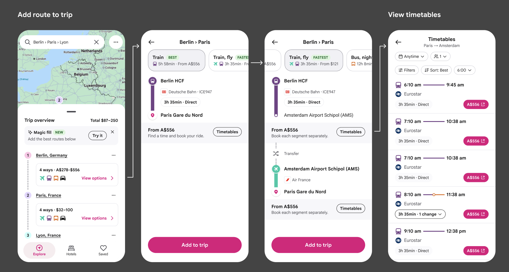
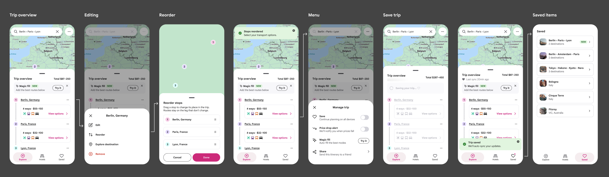
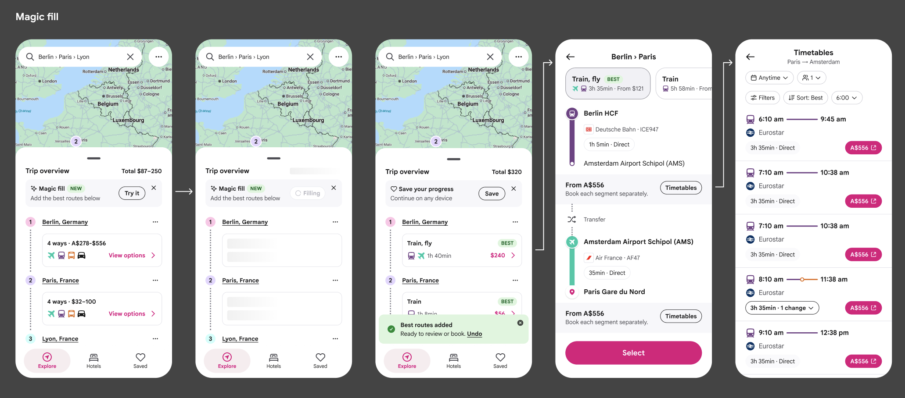
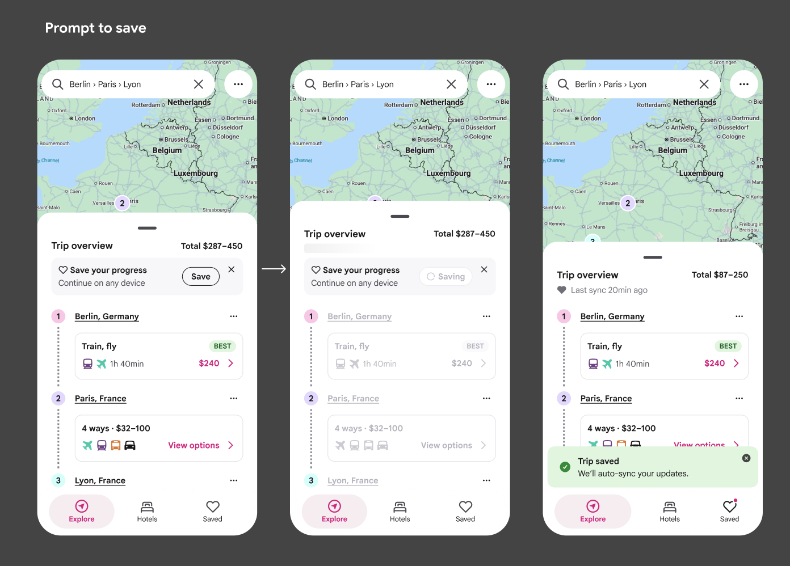

Rome2Rio · 2026
Users planning complex journeys with multiple stops were forced to leave the product to piece together multi-leg routes. I brought multi-stop search into the core Explore experience, allowing users to plan and compare journeys across multiple destinations without leaving the view.
My role
Product Design Lead
Outcome
Consolidated multi-leg workflow into core product
Method
Usability testing, iterative design
Today's trip planner guides users through a linear experience when planning multi-leg journeys. Users break their browsing flow to navigate away from Explore and piece together routes across multiple legs manually. There's no way to see all legs at once, no easy way to compare transport modes across the entire journey andno persistence for trip intent – users can't save or revisit their trip ideas without starting over.

The trip planner functionality wasn't broken – it was just in the wrong place. By consolidating the multi-stop workflow into Explore, users can see their complete journey, modify it inline andsave it as part of a broader trip curation experience (like saving accommodation or attractions). The MVP repositions where multi-stop results surface without rebuilding the core logic.

Trip Overview. A condensed view of all legs at once – showing start/end destinations, mode icons, duration and price per leg. Users can immediately see their full journey and spot the most expensive or time-consuming leg.
Inline destination editing. Each destination row becomes interactive on hover: remove button, drag handle anda clear "Add a stop" entry point below the timeline. Users can rebuild their trip without leaving the results view.
Mode selection panel. A dedicated secondary panel shows available routes for each leg with mode breakdowns. "Suggest options" lets users auto-fill the recommended route combination across all legs at once.
Persistent Save CTA. A labelled button in the sticky footer replaces an icon button, making the save action explicit and always visible as users scroll through options.

"Bringing multi-stops into our core product meant consolidating a workflow, not rebuilding one. Users tell you where they expect to interact."
The multi-destination search is a foundation. Eventually, the trip planner menu becomes a personal repository for all saved travel plans – full multi-stop itineraries, individual route segments, or destination collections. This mirrors how platforms like Airbnb let users curate and review saved items as part of their broader trip planning process. Rome2Rio shifts from a single-search tool to a trip curation platform.
